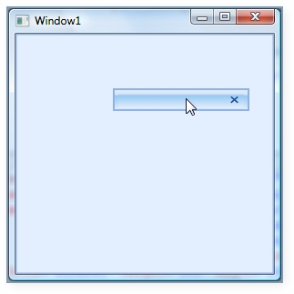

IsRollupFloatWindow property is used to enable the Rollup feature of Float window when it is double clicked.
|
[XAML] <syncfusion:DockingManager Name="DockingManager">
<Grid Name="grid1" syncfusion:DockingManager.State="Float" syncfusion:DockingManager.IsRollupFloatWindow="True"/>
</syncfusion:DockingManager> |
|
[C#] DockingManager.SetIsRollupFloatWindow(grid1, true); |

Figure 379: FloatWindow is getting rolled up when double click on the header
This can also be applied to all the children of DockingManager as follows:
|
[XAML] <syncfusion:DockingManager Name="DockingManager" IsRollupFloatWindow="True"> <Grid Name="grid1" syncfusion:DockingManager.State="Float"/> <Grid Name="grid2" syncfusion:DockingManager.State="Float"/> </syncfusion:DockingManager> |
|
[C#] DockingManager.IsRollupFloatWindow = true; |